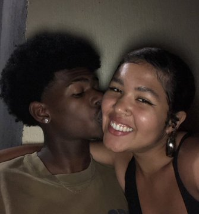

Esse mês ficou puxado pra gente né mozin, #semdinheiro, me virei (porque não sou quadrado), e montei esse espaço como um presente pra você, estarei atualizando sempre pra tocar as musiquinhas que a gente gosta, e cada foto legal que a gente tiver vai aparecer por aqui de vez em quando. 👉você👈 é a pessoa mais especial do mundo, te amo imensuravelmente, quero aproveitar todos os momentos possíveis do seu lado, realizar diversos sonhos, dos que já foram até os que serão sonhados ainda. É Noix Faixa, minha RLK Abração Beijão
Com amor: gtzin_metedor_trembala007